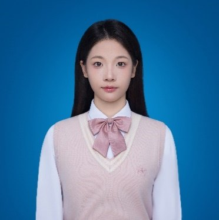
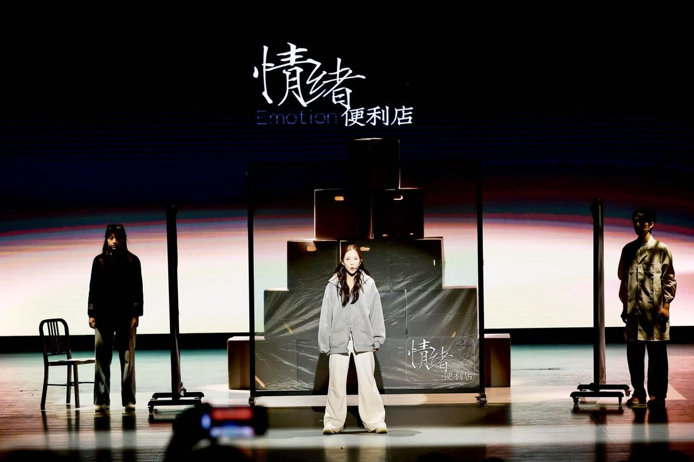
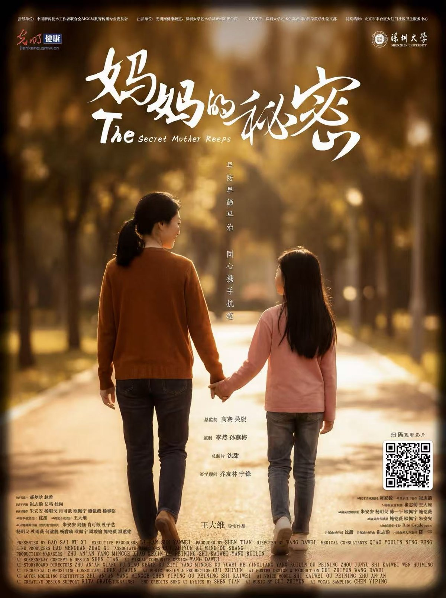
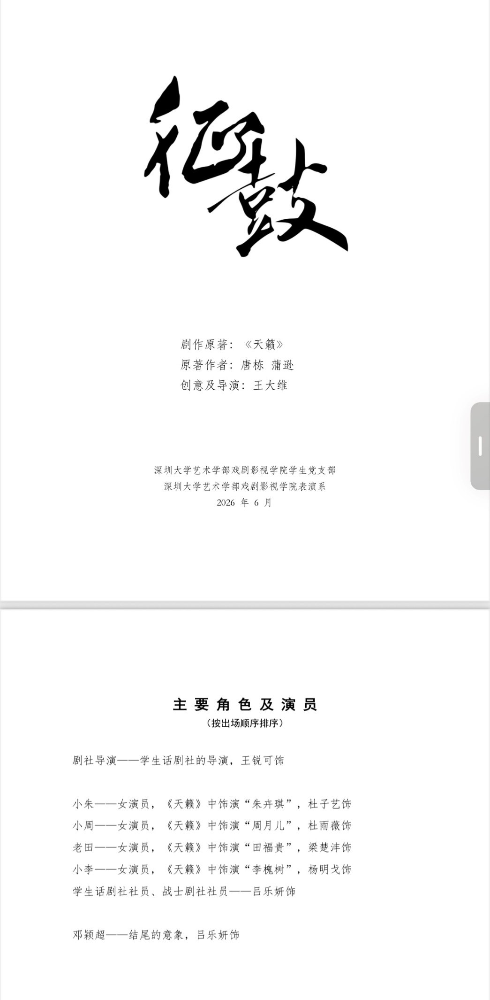
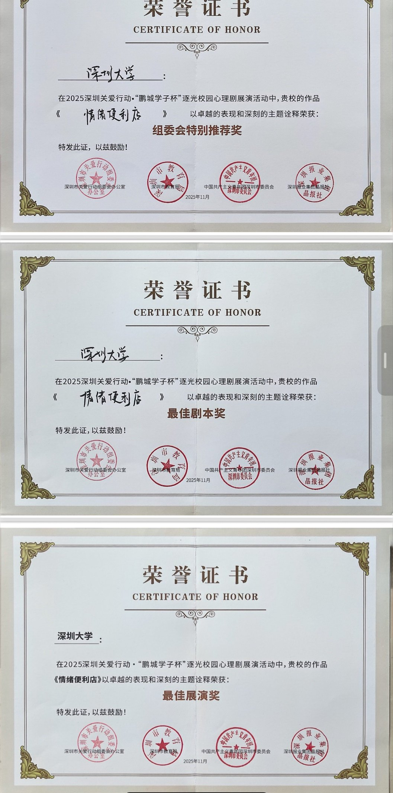

心理剧 · 编剧 / 舞台监督 / 主演最高荣誉
原创心理剧《情绪便利店》
担任编剧、舞台监督与主演。该剧荣获「鹏城学子杯」心理剧展演最高荣誉（最佳展演、最佳剧本及组委会特别推荐奖），并获《晶报》专题报道。
深圳大学 · 艺术学部
用戏剧的真诚，把 AI 装进镜头里 —— 做有温度的影像。

关于我
我热情拥抱「AI + 影视」的时代变革，热爱影视创作与前沿科技，希望能成为一名兼具影视艺术素养与 AI 技术应用能力的复合型创新人才，为影视工业的智能化转型贡献自己的力量。
在专业学习中，我系统钻研剧本创作与视听表达，持续关注行业前沿，也善于与不同背景的同学跨学科协作。
扎实的理论基础之外，我热衷投身前沿技术实践：探索 AI 剧本生成、虚拟角色创建与 AI 视频剪辑，主动打破艺术与技术之间的学科壁垒，不断完善自己的复合知识结构。我希望在真实的项目里积累经验，掌握产出高质量 AI 作品的核心能力，成为一名能在影视行业数字化转型中落地的应用型人才。
艺术给我温度，技术给我边界；我想站在两者之间那束刚刚好的光里。
教育背景
艺术学部 · 戏剧影视表演专业 · 本科
高中阶段 · 河南郑州
在校经历及荣誉
从校园舞台到国家级项目，每一段都留下了可以查证的名字。
担任编剧、舞台监督与主演。该剧荣获「鹏城学子杯」心理剧展演最高荣誉（最佳展演、最佳剧本及组委会特别推荐奖），并获《晶报》专题报道。
《情绪便利店》的续作，于 2026 年 5 月再获深圳大学心理情景剧大赛一等奖，并获推选代表学校角逐广东省级大赛。
担任执行制作、AI 分镜画面导演及 AI 演员建模原型。影片由中国新闻技术工作者联合会 AIGC 与数智传播专业委员会指导，光明网与深圳大学艺术学部戏剧影视学院联合出品，是 2026 年第 32 届全国肿瘤防治宣传周的重点影像作品，并被百度百科收录为「国内首部 AI 全链路健康剧情微电影」。
项目以深圳大学艺术学部第一名的成绩，获得教育部 2026 年全国大学生创新创业训练计划国家级创业项目立项。以独创的「Aid-Ima」全链路创作体系与「商业＋公益」双轨模式，推动影视戏剧的 AIGC 转型，打造兼具技术锐度与人文温度的可持续变现闭环。
担任幕后成员。该剧由深圳市委宣传部指导，南方科技大学、深圳市文学艺术界联合会与深圳大学联合出品；获中国剧协与深圳市双重基金扶持，已完成 5 场公益演出并获十余家权威媒体报道。剧本登榜《人民文学》与《新华文摘》，入围 2026 年「壹戏剧大赏」年度最佳校园戏剧奖。
担任执行导演与 AI 分镜画面导演，主创由光明网与深圳大学艺术学部戏剧影视学院联合出品的《以为是最后的旅程，直到那通电话响起》《一封画着蝴蝶的信，藏着一个孩子没说出口的谢谢》《那束光，是医生》三部作品；分别取材于北京协和医院、北京中医医院、江苏省人民医院三位医学专家的真实经历，已被百度百科收录，并在光明网、光明日报客户端及光明健康相关媒体号全网同步播出。
担任舞台监督与主演，剧目已报送第八届全国大学生艺术展演戏剧（戏曲）乙组竞赛。
担任舞台监督与主演，剧目已报送教育部全国高校「两个结合」青春践行主题作品征集活动。
参与典礼的技术筹备工作，并于 2026 年 3 月 27 日承担现场执行工作。
作品与现场




技能特长
熟悉从剧本策划、视听表达到美学把控的完整流程，能让一个想法稳稳地走到成片与舞台。
擅长使用 AIGC 创作工具、大语言模型及 AI 视频后期合成软件。
擅长跨学科项目统筹、AI 短片制作与前沿技术信息检索。
逻辑思考清晰，学习能力强，做事严谨细致。
具备良好的沟通表达、团队合作与抗压执行能力 —— 舞台监督这份工作，教会我在压力下依然把流程走对。
兴趣爱好
联系方式
无论是影视项目、AIGC 创作合作，还是只想聊聊戏剧与技术，我都很乐意回信。